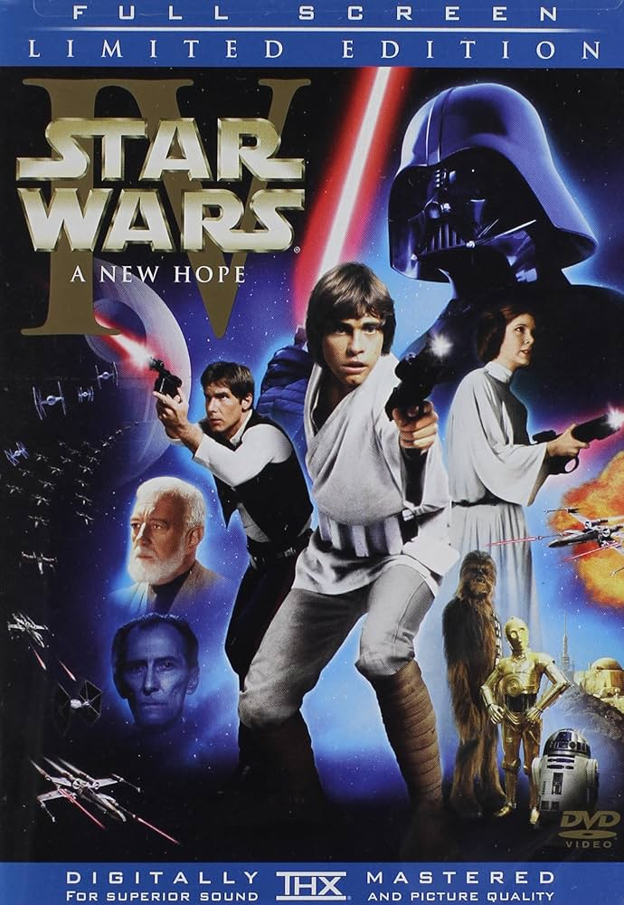

Una Nueva Esperanza (1977)
La nave en la que viaja la princesa Leia es capturada por las tropas imperiales al mando del temible Darth Vader. Antes de ser atrapada, Leia consigue introducir un mensaje en su robot R2-D2, quien acompañado de su inseparable C-3PO logra escapar. Tras aterrizar en el planeta Tattooine son capturado
